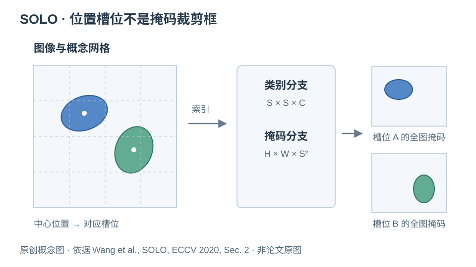
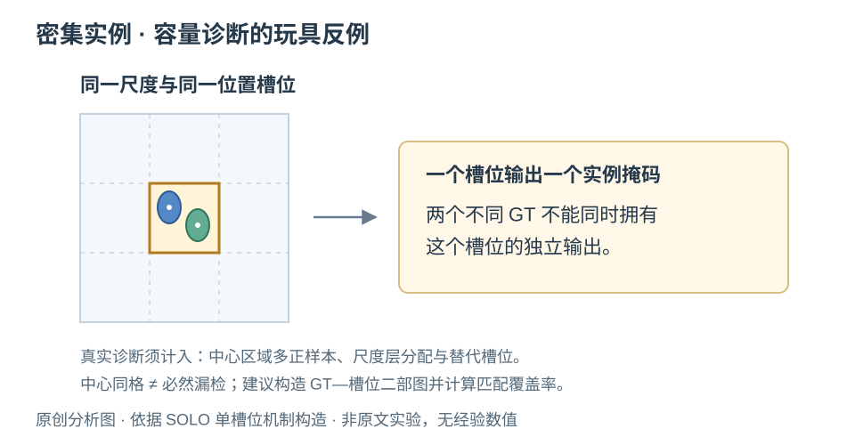

SOLO：用位置定义实例身份
从语义分类到位置条件化的实例掩码：表示假设、实验证据与密集目标边界
论文：SOLO: Segmenting Objects by Locations
作者：Xinlong Wang, Tao Kong, Chunhua Shen, Yuning Jiang, Lei Li
发表状态：正式发表 · ECCV 2020
版本说明：arXiv 首次提交于 2019-12-10；本文对照 ECCV 论文作者公开全文，不与后续期刊扩展版本混用。
论文信息 / arXiv · 阅读全文 PDF · 正式出版记录 · 作者官方代码
代码许可：仓库 LICENSE 标注 non-commercial purposes；使用与分发前需阅读完整条款。论文图片的权限另行核验。
1. 为什么用位置定义实例身份
语义分割的输出通道对应固定语义类别；同一类别中的多个细胞核可以同时出现在前景通道中。实例分割还要保留个体身份，但图像中目标数量不固定，实例 ID 本身也没有跨图像一致的语义。直接把任意标注 ID 当成固定分类通道，会遇到目标排列不确定的问题。
SOLO 的处理方式，是用中心位置和目标尺度组织预测槽位。位置把实例身份绑定到图像坐标，尺度把目标分配到特征金字塔层。一个槽位预测一个实例掩码及其语义类别，从而获得一套确定的监督索引。这里的“instance category”是位置相关的实例索引，不能和“细胞核类别”混为一谈。原文第 2 节说明了这种表示。[1]
这改变了实例生成的入口。Mask R-CNN 从候选框出发，在 RoI 特征中分割；SOLO 从位置槽位出发，直接生成覆盖整幅输出特征图的掩码。两者都可能预测重复实例，因此“box-free”并不意味着没有筛选和抑制步骤。Mask R-CNN 的 RoIAlign 则用于对齐候选区域特征。[4]
| 维度 | Mask R-CNN | SOLO |
|---|---|---|
| 实例索引 | 候选框及对应 RoI | 尺度层与位置槽位 |
| 掩码坐标系 | RoI 内的规则网格，再映射回图像 | 全图掩码特征坐标系 |
| 核心依赖 | 候选定位、RoI 特征与掩码头 | 位置条件化、槽位分配与掩码头 |
| 值得诊断的失败 | 候选漏检、定位误差及局部掩码质量 | 槽位冲突、位置歧义及掩码质量 |
2. 网格、尺度与完整掩码如何协作
在一个预测层上，SOLO 将图像概念性地划分为 S×S 个网格。类别分支输出 S×S×C，判断各槽位是否存在某个语义类别；vanilla 掩码分支输出 H×W×S²，其中每个通道对应一个位置槽位的二值实例掩码。网格负责选择“谁来预测”，并不把实例轮廓裁剪在那个网格内。原文 Fig. 2–3 展示了这一设计。[1]

具体训练还使用中心区域正样本分配，并非始终只有中心所在的单个网格为正。因此，同一个实例可由邻近槽位重复预测，再经 NMS 去重。尺度分配也会影响哪些层拥有监督，不能把所有层的网格数直接当成“必然可分离的实例数量”。坐标通道则使共享卷积获得显式位置信息。[1]
实例槽位：k = (尺度层 ℓ, 网格行 i, 网格列 j)
槽位输出：类别分数 sk,c 与完整实例掩码 Mk(x, y)
机制分析：当两个核外观非常接近时，仅靠“这个纹理像核”无法决定某个通道应响应哪一个核。位置索引给监督增加了可区分的条件。但位置仅提供身份线索，仍需图像特征决定边界；坐标本身不能识别两核之间是否存在真实分隔。
论文另给出 Decoupled SOLO：用行、列两个方向的掩码预测组合减少输出通道。它与 SOLOv2 的动态核分解是不同设计，阅读结果表时应区分 vanilla SOLO、D-SOLO 和 SOLOv2。[1]
3. 哪些实验支持了主张
下表选取作者公开全文中与机制直接相关的少量结果，均为原文报告，本文未复现。AP 使用 COCO 的百分数尺度；例如 35.8 表示 35.8%，不是细胞核任务中的 AJI 或 PQ。不同表格有不同训练设置，不能把差值简单相加。[1]
| 实验及设置 | 原文结果 | 支持什么 / 不能说明什么 |
|---|---|---|
| Table 1：COCO test-dev，ResNet-101-FPN，主结果表采用 6×（72 epochs） | SOLO AP 37.8；增强版 Mask R-CNN* AP 37.8 | 支持直接位置分割可获得有竞争力的整体精度；没有证明全面超过框方法。 |
| Table 2：COCO val2017，单层网格 S=12 / 24 / 36 | AP 27.2 / 29.0 / 28.6 | 增加网格并非单调增益；不能把“槽位更多”等同于“分割更好”。 |
| Table 2：多层 Pyramid 方案 | AP 35.8 | 支持这套多层预测设计，但同时改变尺度组织与预测配置，不能视为只增加网格的实验。 |
| Table 3：0 / 1 层 CoordConv，COCO val2017 | AP 32.2 / 35.8 | 支持显式位置条件有用；不能据此推导它已消除密集实例的所有身份歧义。 |
如何读这些证据：主结果回答“这个范式能不能工作”，位置编码消融更接近回答“为什么能工作”。而网格实验提醒我们，表示容量、特征质量和优化难度可能共同变化。若把整套多尺度方案的提升全部归因于减少位置碰撞，就超出了实验能够排除的替代解释。
论文也比较了掩码损失，并讨论了用真值掩码替换预测的诊断实验。值得借鉴的是干预思路：暂时消除某一环节的误差，观察剩余瓶颈。真正使用时，应写清替换规则、匹配方式及是否使用了真值信息，不能把这种诊断结果当成可部署性能。[1]
4. 密集小目标：先诊断表示，再增加模块
以下为本文推论，原文未在细胞核数据上验证。SOLO 的关键前提可以转成一个可测问题：在给定尺度分配和中心区域规则下，多个真实实例是否争用同一预测槽位？密集且尺度相近的细胞核，可能使这一问题比自然场景更突出，但“密集”本身不能证明实际训练已经发生大量冲突。

可以先记录每个 GT 实例的全部合法正样本槽位，构造“GT—槽位”二部图。如果有 N 个真实例，而最大匹配只能覆盖 ν 个，那么在“每个 GT 至少占一个专属槽位、每个槽位只能表示一个实例”的理想化假设下，至少有 N−ν 个实例无法获得互不冲突的槽位。这是对分配规则的结构诊断，不是对训练后召回率的严格界：模型也可能从非指定槽位输出候选。
第二个问题是掩码分辨率。即使两个核拥有不同槽位，它们之间的窄间隙也可能在下采样后变得难以识别。第三个问题是相邻掩码的重叠与筛选：预测边界外扩会使两个真实例看起来像重复预测。因此，槽位可分配性、边界可分性和候选保留率是三个需要分别测量的环节。
这也解释了为什么很高的前景 Dice 仍可能伴随实例合并。前景覆盖与对象身份是不同目标；对细胞核任务，应同时观察 AJI、PQ、实例级召回，以及 merge / split 错误，而不是直接把 COCO AP 的结论搬到医学图像。
5. 可借鉴的消融与尚未解决的问题
最值得迁移的是“假设—干预—观测”的实验链，而不是某个网格配置。下面的方案均是未来研究建议，尚无实验结果。
| 待检验假设 | 控制变量与干预 | 观测及替代解释 |
|---|---|---|
| 漏检主要来自槽位冲突 | 只改变网格密度，保持输入、特征、损失、训练预算一致；另比较同格多候选方案。 | 匹配覆盖率、NMS 前实例召回、按核密度分组的漏检。若覆盖提高而召回不变，应检查特征或优化。 |
| 错误主要来自边界信息丢失 | 固定槽位分配，对比输出 stride；通道数和算力尽可能匹配，并单列实际开销。 | 边界误差、最小核间距分组、merge 率；不能只看总体 Dice。 |
| 显式坐标对身份区分有用 | 有 / 无坐标，与网格密度做交叉消融；加入平移、裁剪后的稳定性评估。 | 分离能力和域外位置稳健性；防止把数据位置偏置误判为通用机制。 |
| NMS 误删了相邻真实例 | 缓存同一组候选，仅切换筛选规则与阈值。 | NMS 前后召回差、重复率、相邻实例误抑制；控制候选数。 |
对 CPM17 等小数据集，可以沿用固定 train/test 协议，在训练数据内部完成诊断与超参数选择，避免反复使用 test 选配置；多个随机种子和逐图配对统计有助于判断差异是否稳定。若研究问题强调“密集”，还要报告密度定义、每组样本数和性能分布，避免平均指标掩盖真正困难的区域。
值得继续追问的是：固定位置槽位如何根据局部密度自适应增加容量？同格多候选怎样避免重复和训练排列歧义？边界不清时，位置身份能否与像素归属约束共同使用？这些都是由表示假设导出的研究问题；是否新颖，仍需额外检索相关工作并验证，不能仅凭本篇经典论文的局限就认定创新成立。
6. 来源与图像说明
- Xinlong Wang, Tao Kong, Chunhua Shen, Yuning Jiang, Lei Li. SOLO: Segmenting Objects by Locations. ECCV 2020, pp. 649–665. 作者公开全文；正式出版 / DOI；arXiv 与版本记录。机制参见第 2 节及 Fig. 2–3，实验参见 Table 1–4。
- 作者项目主页与官方 SOLO / SOLOv2 仓库。后者基于较早版本的 MMDetection；“官方开源”不代表当前环境无需适配即可复现。
- 代码许可证标注 non-commercial purposes；不能将代码许可自动视为论文图片许可。SOLO 出版页面列出 Springer Nature 版权及转载许可入口。此次未取得明确原图转载许可，因此只使用独立绘制的概念图，图源审查见 图片来源记录。
- Kaiming He, Georgia Gkioxari, Piotr Dollár, Ross Girshick. Mask R-CNN. ICCV 2017. 论文全文入口。用于对比 RoI、RoIAlign 与实例掩码流程。